광학기능사 (2001-04-29 기출문제)
1과목: 광학일반
1. 소음에 대한 적합한 작업환경 관리방법이다. 다음 중 틀리는 것은?
- 소음발생형태, 주파수경로, 형태에 따른 적정 흡음재를 선택하여 흡음시설을 한다.
- 설비기계, 기구의 진동을 감소하기 위해 제진구조로 한다.
- 밀폐가 가능한 부분을 밀폐한다.
- 작업에 지장을 주지 않는 범위내에서 소음수준이 높은 부서에 차단벽 등 차폐시설을 강구한다.
(정답률: 알수없음)

2. 복사기에 대한 설명 중 틀린 것은?
- 복사하는 면 전체가 동시에 헤드 드럼에 결상된다.
- 확대 배율이 조정되는 것은 줌렌즈가 있기 때문이다.
- 거울을 쓰는 것은 광 경로를 꺾어서 복사기의 크기를 작게 만들려는 것이다.
- 뚜껑 안쪽면이 흰색인 것은 복사하는 배경색을 흰색으로 하기 위한 것이다.
(정답률: 알수없음)
3. 그림과 같이 5㎛ 떨어진 슬릿 두 개에 파장이 1㎛ 되는 평행광이 수직으로 입사한다. 이 슬릿에서 1m 되는 거리에 수직으로 있는 스크린에 평행선무늬가 나타날 때 무늬사이의 간격은 얼마인가?
- 5 cm
- 10 cm
- 15 cm
- 20 cm
(정답률: 알수없음)
4. 시각표시단말장치(Visual Display Terminal : VDT) 취급사업장의 작업환경관리가 아닌 것은?
- 외부 태양광선의 차단을 위한 창에 커튼을 친다.
- 키보드상의 조도는 300∼500Lux로 한다.
- 키보드 주변의 조도비는 1:3:10으로 유지한다.
- 벽의 색체는 회백색으로 한다.
(정답률: 알수없음)
5. 빛의 본성을 설명한 내용이 아닌 것은?
- 입자설
- 분자설
- 파동설
- 전자기파설
(정답률: 알수없음)
6. 격자의 수가 1000 lines/mm인 회절격자의 2차 회절광을 이용하여 분광할 때, 격자의 전체 폭은 100mm이고, 사용한 폭이 50mm였다면 이론적인 분해능은 얼마인가?
- 103
- 105
- 2x105
- 106
(정답률: 알수없음)
7. 다음 항목 중 Rayleigh 기준에 의한 렌즈의 한계분해능을 나타내는 것과 직접 관련없는 것은?
- 광원의 파장
- 유효 직경
- 초점길이
- 렌즈 마운트의 종류
(정답률: 알수없음)
8. 눈에서 빛의 굴절이 일어나는 부위는?
- 홍채
- 수정체
- 동공
- 모양체
(정답률: 알수없음)
9. 사람의 눈과 사진기의 주요 부분에 대한 기능 비교가 틀린 것은?
- 필름 : 망막
- 홍채 : 셔터
- 각막과 수정체 : 렌즈
- 공막과 맥락막 : 어둠상자
(정답률: 알수없음)
10. 빛이 공기에서 유리속으로 진행할 때 다음중 변하지 않는 것은?
- 진동수
- 파장
- 속도
- 진행방향
(정답률: 알수없음)
11. 사람의 눈이 밤에 명암은 쉽게 판단하나, 색채를 잘 구별하지 못하는 까닭으로 적절한 것은?
- 어두우면 홍채가 확대되어 색을 흡수하기 때문이다.
- 어두우면 맹점이 팽창하기 때문이다.
- 원추세포는 어두워도 밝기에 예민하나 원통세포는 어두워지면 둔감해지기 때문이다.
- 원통세포는 어두워도 밝기에 예민하나 원추세포는 어두워지면 둔감해지기 때문이다.
(정답률: 알수없음)
12. 가정에 쓰는 수동 카메라를 이용하여 날아가는 총알을 촬영하려 한다. 다음 중 가장 적절한 촬영방법은? (단, 총알의 속도는 약 1km/s이고, 카메라의 촬영 면적은 10cm2 이다.)
- 플래쉬 램프가 장착된 수동카메라로 총알이 촬영영역에 들어오면 셔터를 누른다.
- 수동카메라를 B 셔터로 열어 놓고 총알이 촬영영역에들어오면 플래쉬 램프를 터트린다.
- 백열등을 강하게 조명하고 총알이 촬영영역에 들어오면 가장 빠른 속도의 셔터를 누른다.
- 백열등을 강하게 조명하고 수동카메라를 B 셔터로 열어 놓는다.
(정답률: 알수없음)
13. 구경 25mm, 초점거리 50mm인 렌즈의 F수(F-number)는?
- 0.5
- 1
- 2
- 4
(정답률: 알수없음)
14. 부정시안인 환자를 교정하기 위하여 음의 굴절력을 가진 안경렌즈를 착용시켰다. 이 환자의 눈의 결함은?
- 근시안
- 원시안
- 난시안
- 사시안
(정답률: 알수없음)
15. 일반 연삭재를 이용한 정연삭에 비해 다이아몬드 펠렛을 이용한 정연삭의 특징으로 틀린 것은?
- 소량 생산에 적합하다.
- 가공면이 광택이 난다.
- 초종에 따라서 가공시간의 차이가 많다.
- 유리에 상처를 내서 곤란한 경우가 생길 수 있다.
(정답률: 알수없음)
2과목: 광학가공
16. 초점거리가 5㎝인 렌즈의 각 배율은 얼마인가?
- 5×
- 10×
- 20×
- 25×
(정답률: 알수없음)
17. 어느 공장의 월평균 종업원수는 500명이고, 년 작업시간수는 10만시간이고 재해건수가 2건, 작업손실일수가 50일 이라면 이 공장의 도수율은?
- 0.02
- 4
- 20
- 500
(정답률: 알수없음)
18. 사고와 재해와의 관련을 명백히 하기 위해 하인리히가 발표했던 중상재해의 연계성 법칙은?
- 1 : 5 : 500
- 1 : 29 : 300
- 1 : 30 : 290
- 1 : 10 : 100
(정답률: 알수없음)
19. 4 칸델라(cd)의 광원이 탁자의 중앙 50cm 위에 매달려 있다. 탁자 중심에서의 발광 조도(lx)는?
- 4 lx
- 16 lx
- 20 lx
- 25 lx
(정답률: 알수없음)
20. 원기를 사용한 뉴톤 링 검사에서 다음 중 비점수차(아스)가 있는 면은?
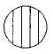
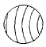
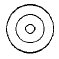
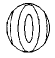
(정답률: 알수없음)
21. 굴절율이 1인 공기에서 굴절율이 1.5인 유리 속으로 빛이 입사할 때 Brewster각은 56°이다. Brewster각으로 빛이 입사한다면 이 때 굴절각은 얼마인가?
- 28°
- 34°
- 44°
- 56°
(정답률: 알수없음)
22. 저녁놀이 붉게 보이는 이유는 빛의 어떤 현상인가?
- 굴절
- 회절
- 산란
- 간섭
(정답률: 알수없음)
23. 어떤 쌍안경에 6x30으로 표기되어 있다. 이 쌍안경에서 출사동의 직경은?
- 5 mm
- 6 mm
- 30 mm
- 180 mm
(정답률: 알수없음)
24. 다음 중 박막의 부착력을 측정하는 방법으로 적당하지 않은 것은?
- 코팅 표면을 지우개로 문질러서 검사한다.
- 코팅 표면에 뜨거운 물을 부어 일어나는 정도를 검사한다.
- 접착 테이프를 박막에 붙여서 이 테이프를 당겼을 때 박막이 일어나는가를 검사한다.
- 신축성이 없으며 작고 단단한 강력 접착제 박막을 붙이고 면도날 등으로 잡아당겨서 검사한다.
(정답률: 알수없음)
25. 다음 중 빛의 진행 방향을 90°또는 180°변환시키기 위해 사용되는 것은?
- 렌즈
- 프리즘
- 필터
- 반사경
(정답률: 알수없음)
26. 반사형 간섭계를 사용하여 거울의 형상을 측정할 경우 다음과 같은 간섭무늬를 얻었다면 거울의 형상오차의 크기 는? (단, 광원의 파장은 0.6 ㎛)
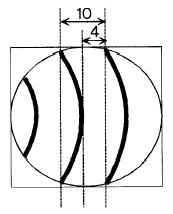
- 0.12 ㎛
- 0.24 ㎛
- 0.48 ㎛
- 0.60 ㎛
(정답률: 알수없음)
27. 금전등록기 취급원과 같이 상지작업을 하는 근로자의 생체에 부담을 주는 요인이라고 할 수 없는 것은?
- 작업부하의 과중
- 인간공학적인 결함
- 경견완장해에 대한 이해부족
- 다량의 분진발생 등 환경조건의 미비
(정답률: 알수없음)
28. 코어가 1.6, 클래딩이 1.5의 굴절률을 갖는 광섬유가 있다. 이 광섬유의 수치구경(Numerical Aperture)은 얼마인가?
- 0.45
- 0.55
- 0.65
- 0.75
(정답률: 알수없음)
29. 굴절율이 1.0인 공기에서 굴절율이 2.0 인 매질로 수직으로 입사한 빛의 반사 및 굴절에 관한 다음 표현중 옳은 것은?
- 반사각은 90도 이다.
- 굴절각은 90도 이다.
- 반사하는 빛의 세기는 입사하는 빛의 세기의 1/3 이다.
- 투과하는 빛의 세기는 입사하는 빛의 세기의 8/9 이다.
(정답률: 알수없음)
30. 다음 중 내시경에 사용되는 광원으로 적당한 것은?
- 헬륨네온 레이저
- LED
- 할로겐 램프
- 이산화탄소 레이저
(정답률: 알수없음)
3과목: 광학기기
31. 사업장에서 중량물 취급시 발생하는 요통의 원인에 대해 열거한 사항들이다. 다음 중 적합치 않은 요인은?
- 체력허약, 운동량증가 등에 수반되는 근력의 저하
- 부적합한 요추자세 등과 같은 비생리적 자세의 지속
- 작업의 전문화, 분업화로 인한 동일한 국소운동의 증가
- 중량물의 취급이 과중하고, 동일한 작업자세의 반복성 증가
(정답률: 알수없음)
32. 파장 500nm에서 굴절률이 1.25인 물질로 파장 500nm에 대하여 반사가 가장 적도록 단층 무반사막을 증착할 때, 가장 적절한 박막의 두께는?
- 100nm
- 125nm
- 200nm
- 250nm
(정답률: 알수없음)
33. 코팅하지 않은 렌즈(굴절률 1.5)에 수직으로 입사한 광의 경우 투과율은 몇 ％인가? (단, 흡수는 고려하지 않음)
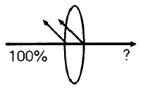
- 90％
- 92％
- 94％
- 96％
(정답률: 알수없음)
34. 원시인 사람이 100cm 이내 물체를 또렷이 보지 못한다면이 사람이 25cm에 있는 물체를 잘 볼 수 있도록 하기위해서 필요한 교정렌즈는 몇 디옵터이어야 하는가?
- 1.0
- 2.0
- 3.0
- 5.0
(정답률: 알수없음)
35. 단색 필터를 사용한 사진기의 성능을 개선하기 위하여 대물렌즈에서 반드시 제거되지 않아도 되는 수차는?
- 구면수차
- 왜곡수차
- 비점수차
- 색수차
(정답률: 알수없음)
36. 평면의 뉴톤링 검사에서 "가"쪽을 가볍게 눌러 "나"쪽이 미세하게 들려진 경우의 간섭무늬가 그림과 같을 때 이 검사면의 형상을 바르게 설명한 것은?
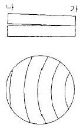
- 피검면은 완전한 평면이다.
- 피검면은 볼록하다.
- 피검면은 오목하다.
- 피검면에 비점수차 (아스티그마티즘, 아스)가 있다.
(정답률: 알수없음)
37. 광학 박막(코팅)의 투과율을 측정하는 장비는?
- 간섭계
- 고니오메터
- 분광광도계
- 오토 콜리메이터
(정답률: 알수없음)
38. 프라운호퍼 d선의 굴절율이 1.5, F선의 굴절율이 1.5⑤, C선의 굴절율이 1.495인 광학유리의 분산상수(아베 상수)는?
- 10
- 45
- 50
- 55
(정답률: 알수없음)
39. 굴절율 1.5인 유리와 공기 경계면에서의 전반사각 θc는?
- sinθc =2/3
- cosθc =2/3
- tanθc =2/3
- tanθc =3/2
(정답률: 알수없음)
40. 그림과 같이 양면이 볼록한 얇은 렌즈가 있다. 이 렌즈의 굴절능(dioptric power)은 몇 디옵터(m-1)인가? (단, n = 1.5, r1 = r2 = 100 mm)
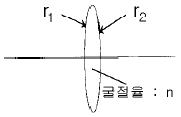
- 5 D
- 10 D
- 20 D
- 50 D
(정답률: 알수없음)
41. 빛의 성질에 의해 밤하늘 별의 높이가 실제보다 다르게 보이는데 이것은 어느 특성 때문인가?
- 회절
- 간섭
- 굴절
- 반사
(정답률: 알수없음)
42. 성형가공(CG)을 할 때 다이아몬드 휠의 쎄팅 각도를 선정하는 관계식으로 맞는 것은? (단, θ: 다이아몬드 휠의 쎄팅 각도, R : 가공할 구면의 곡률, r : 다이아몬드 휠의 반경, r0 : 다이아몬드 휠 끝단의 반경)
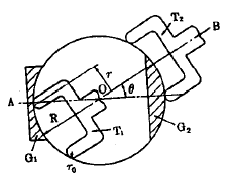
- sinθ= r/(R ± r0)
- sinθ= (R ± r0)/r
- sinθ= r0/(R ± r)
- sinθ= R/(r ± r0
(정답률: 알수없음)
43. 산업재해를 일으키는 4M의 원인인 Man(인간), Machine(설비물), Media(작업), Management(관리) 중 인간의 요인이 라고 할 수 없는 것은?
- 심리적 원인
- 생리적 원인
- 직장적 원인
- 작업정보가 부적절한 원인
(정답률: 알수없음)
44. 작업환경 관리를 필요로 하는 유해요인 중에서 물리학적인 요인이라고 볼 수 없는 것은?
- 유기용제
- 방사선
- 고온
- 이상기압
(정답률: 알수없음)
45. 초점 길이가 100mm인 확대경을 사용하여 상을 명시거리 250mm에 있도록 하여 관찰할 때 상의 배율은?
- 1.5배
- 2배
- 2.5배
- 3.5배
(정답률: 알수없음)
4과목: 질관리와 산업안전
46. 극장에 사용되는 영사기에는 필름면에 광이 잘 집광되도록 그림과 같이 램프 뒷면에 거울을 사용하여 집광한다. 가장 효율적인 거울의 모양은? (단, 거울의 구경은 필름보다 크다.)
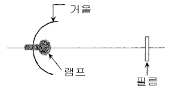
- 쌍곡면경
- 삼각경
- 볼록경
- 타원경
(정답률: 알수없음)
47. 보기 내용이 광학평면 제작 순서로 알맞은 것은?
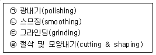
- ㉠ - ㉡ - ㉢ - ㉣
- ㉣ - ㉠ - ㉡ - ㉢
- ㉡ - ㉢ - ㉣ - ㉠
- ㉣ - ㉢ - ㉡ - ㉠
(정답률: 알수없음)
48. 만약 눈에 약품이 들어갔을 때 실험실에서 처방하는 방법 중 옳지 않는 것은?
- 즉시 수돗물에 흘려 내려서 씻는다.
- 약품이 산이면 묽은 HaHCO3 용액으로 씻는다.
- 약품이 알칼리이면 묽은 H3BO3 용액으로 씻는다.
- 묽은 피크르산으로 씻는다.
(정답률: 알수없음)
49. 진폐증 발생에 관여하는 요인이 아닌 것은?
- 입자크기
- 작업경력
- 농도
- 폭로기간
(정답률: 알수없음)
50. 초점거리가 각각 20㎝, 30㎝인 얇은 렌즈를 나란히 놓았을 때, 유효 초점거리는 얼마인가?
- 12㎝
- 25㎝
- 50㎝
- 60㎝
(정답률: 알수없음)
51. 중심 파장이 λ인 패브리-페롯형 간섭필터를 제작할 때 반사경 사이의 간격(spaced)의 광학적 두께는?
- λ/4
- λ/3
- λ/2
- λ
(정답률: 알수없음)
52. 파장의 단위로 nm(nanometer)를 사용할 때 주간에 보이는 가시광선의 파장 범위는?
- 380nm 진보라(violet-blue)에서부터 650nm 진한 적색(deep red)까지
- 420nm 진보라(violet-blue)에서부터 750nm 진한 적색(deep red)까지
- 420nm 진보라(violet-blue)에서부터 650nm 진한 적색(deep red)까지
- 380nm 진보라(violet-blue)에서부터 750nm 진한 적색(deep red)까지
(정답률: 알수없음)
53. 프레넬 영역판(Fresnel Zone Plate)에서 가운데 원의 면적이 A일 때, 두 번째와 세 번째 원 사이의 면적은 얼마인가?
- A/3
- A/2
- A
- 2A
(정답률: 알수없음)
54. 다음 중 선 스펙트럼을 나타내는 광원은?
- 탄소등
- 텅스텐등
- 할로겐등
- 저압수은등
(정답률: 알수없음)
55. 원점이 1m 인 사람이 멀리 떨어진 물체를 선명하게 보기 위해서는 초점거리가 얼마인 렌즈를 착용해야 하는가?
- 0.5m
- -0.5m
- 1.0m
- -1.0m
(정답률: 알수없음)
56. 광학소자 가공 중 좋은 평면을 내기 위한 조건으로 적당하지 않은 것은?
- 정반(定盤)의 평면 정도가 좋아야 한다.
- 가장자리 가공시 중심부보다 압력을 적게 주어야 한다.
- 연마의 가공 거리가 제품의 어느 부분을 잡아도 같아야 한다.
- 가공 중 연마액 공급량이 면의 어느 부분을 깎아도 같아야 한다.
(정답률: 알수없음)
57. 폭이 50㎛인 슬릿에 의해서 500nm 인 빛이 회절되었다. 슬릿에서 스크린까지의 거리가 1m라면 무늬의 중심에서 첫 번째 어두운 무늬까지의 거리는 얼마인가?
- 1mm
- 1cm
- 10cm
- 1m
(정답률: 알수없음)
58. 다음 광원 중 빛을 내는 원리가 다른 것은?
- 백열 전등
- 할로겐 등
- 나트륨 등
- 녹은 철이 내는 빛
(정답률: 알수없음)
59. 꼭지각이 60°인 프리즘의 최소 편이각(deviation angle)이 30°였다. 이 프리즘의 굴절율은?
- 21/2
- 31/2
- 41/2
- 51/2
(정답률: 알수없음)
60. 오른손 방향 원형 편광된 빛과 왼손 방향 원형 편광된 두 빛이 중첩하면 그 빛의 편광상태는 어떻게 되는가? (단, 두 빛의 세기는 같다고 가정한다.)
- 선형 편광
- 원형 편광
- 타원 편광
- 편광이 없어진다.
(정답률: 알수없음)